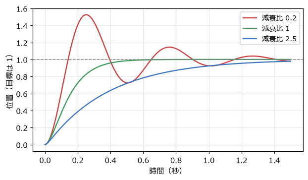
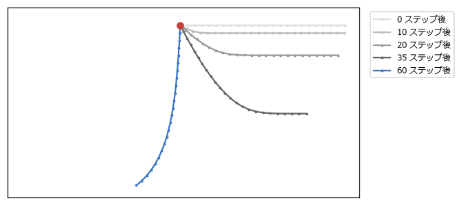
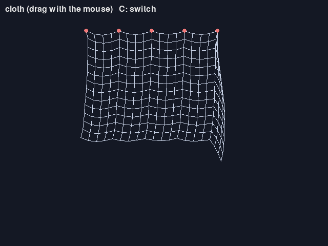

13. ばね・拘束・粒子
この章では、ゲームの演出や表現でよく使う 3 つの物理を扱う。揺れて戻る動きを作るばね、ロープや布を作る拘束、火花や煙を作るパーティクルである。どれも、これまでの章の道具の組み合わせで作れる。
13.1. ばねとダンパー
ばねは、自然な長さからのずれに比例する力で、元に戻ろうとする（フックの法則）。ばねだけでは永遠に揺れ続けるので、速度に比例するブレーキの力（ダンパー、減衰力）を組み合わせる。目標の位置 \(x_0\) に向かうばねとダンパーの加速度は、質量 1 あたりで次のようになる。
\(k\) をばね定数、\(c\) を減衰係数と呼ぶ。\(k\) が大きいほど硬く速く揺れ、\(c\) が大きいほど揺れが早く収まる。
1def spring_step(position: Vector2, velocity: Vector2, target: Vector2, k: float, c: float,
2 dt: float) -> tuple[Vector2, Vector2]:
3 """ばねの力 -k(x - target) と減衰力 -cv を受けて dt 秒進める（半陰的オイラー法）。"""
4 acceleration = (target - position) * k - velocity * c
5 velocity = velocity + acceleration * dt
6 return position + velocity * dt, velocity
13.1.1. 固有振動数と減衰比で調整する
\(k\) と \(c\) を直接調整するのは難しい。第 10 章のジャンプと同じく、人間が感覚的に分かる値から求めるとよい。
固有振動数 \(f\): 減衰が無いときに 1 秒間に揺れる回数（Hz）。速さの目安になる。
減衰比 \(\zeta\): 揺れの収まり方。1 未満なら行き過ぎて揺れながら収まり、1 ならちょうど揺れずに最も早く収まり、1 より大きいと揺れずにゆっくり近づく。
角振動数を \(\omega = 2\pi f\) とすると、次の関係がある。
1def spring_coefficients(frequency: float, damping_ratio: float) -> tuple[float, float]:
2 """固有振動数と減衰比から、質量 1 あたりのばね定数 k と減衰係数 c を求める。"""
3 omega = math.tau * frequency # 角振動数
4 return omega * omega, 2 * damping_ratio * omega
図 13.1 は、固有振動数 2 Hz で減衰比だけを変えたときの動きである。減衰比 1 の状態を臨界減衰と呼ぶ。


図 13.1 減衰比によるばねの動きの違い（固有振動数 2 Hz）
spring.py では、3 つの四角がそれぞれの減衰比でマウスを追いかける。第 8 章の damp との違いは、速度を持っていることである。damp は目標が急に動くと即座に向きを変えるが、ばねは勢いが残るので、行き過ぎたり、遅れて動き出したりする。
ばねは、ゲームの次のような場面で使われる。
ボタンを押したときに、ぷるんと揺れて元の大きさに戻る UI
着地したときに、キャラクターがつぶれてから元に戻る動き（第 15 章）
目標に少し遅れて、勢いよくついてくるカメラ
揺れる髪やアクセサリー
ばねが硬い（\(k\) が大きい）ほど、数値積分は不安定になりやすい。目安として、\(\omega\,\Delta t\) が 1 より十分小さくなるようにする。固有振動数 2 Hz、60 FPS なら \(\omega\,\Delta t \approx 0.21\) で問題無い。
13.2. 拘束とベルレ法
ロープや鎖は、「隣り合う点の距離が一定」という条件を満たしながら動く。このような条件を拘束と呼ぶ。拘束を、硬いばねで近似することもできるが、ばねを硬くするほど不安定になる。そこで、力を計算する代わりに、条件を満たすように位置を直接動かす方法がよく使われる。
13.2.1. 位置ベルレ法
位置を直接動かす方法と相性が良いのが位置ベルレ法である。各点は速度を持たず、「今の位置」と「1 ステップ前の位置」だけを持つ。速度は 2 つの位置の差から求める。
1def verlet_step(points: list[Point], dt: float) -> None:
2 """位置ベルレ法: 新しい位置 = 今の位置 + (今の位置 - 前の位置) + 加速度 × dt^2。"""
3 for p in points:
4 if p.pinned:
5 continue
6 velocity = (p.position - p.previous) * DAMPING # 1 ステップあたりの移動量
7 p.previous = Vector2(p.position)
8 p.position += velocity + GRAVITY * (dt * dt)
速度を別に持たないので、拘束で位置を動かすと、その分が自動的に速度に反映される。たとえば、拘束によって点を上に動かすと、次のステップでは上向きの速度を持っているように扱われる。
13.2.2. 距離拘束
2 つの点の距離を一定に保つ距離拘束は、次のように満たす。今の距離と決められた長さの差を求め、2 つの点を結ぶ線の向きに、差の半分ずつ動かす（固定された点は動かさず、もう一方を全部動かす）。
1def satisfy(stick: Stick) -> None:
2 """2 つの点を結ぶ線の向きに動かして、距離を length に戻す。固定された点は動かさない。"""
3 delta = stick.b.position - stick.a.position
4 distance = delta.length()
5 if distance < 1e-9:
6 return
7 error = (distance - stick.length) / distance # 伸びている割合
8 movable = (not stick.a.pinned) + (not stick.b.pinned)
9 if movable == 0:
10 return
11 shift = delta * (error / movable)
12 if not stick.a.pinned:
13 stick.a.position += shift
14 if not stick.b.pinned:
15 stick.b.position -= shift
1 つの拘束を満たすと、隣の拘束がずれる。そこで、すべての拘束を順に満たす処理を何回か繰り返す。繰り返すほど伸びにくくなるが、計算は重くなる。rope.py では 12 回繰り返している。この方法は、Thomas Jakobsen が 2001 年に発表した手法として知られ、ゲームのロープや布、ラグドール（力の抜けた人体）の表現に広く使われてきた。
図 13.2 は、左端を固定した水平なロープが重力で垂れ下がっていく様子である。


図 13.2 左端を固定したロープ（赤い点）が垂れ下がる様子
13.3. 布とソフトボディー
点を格子状に並べ、縦と横に隣り合う点を距離拘束で結べば、布になる。rope.py で C キーを押すと、布に切り替わる（図 13.3）。上の辺のいくつかの点を固定しているので、カーテンのように垂れ下がる。マウスでつかんで引っ張ることもできる。


図 13.3 rope.py の布
斜めの点どうしも拘束で結ぶと、布がせん断（ひし形につぶれる変形）に抵抗するようになる。さらに、閉じた形の点を拘束で結べば、ぷよぷよした弾力のある物体（ソフトボディー）も作れる。
13.4. パーティクル
火花、煙、爆発、水しぶき、魔法のエフェクトなどは、たくさんの小さな粒（パーティクル）で表現する。1 つ 1 つのパーティクルは、位置・速度・残り寿命などを持つだけの単純な点である。
1def update_particles(particles: list[Particle], dt: float) -> list[Particle]:
2 """粒子を dt 秒進め、寿命が残っているものだけを返す。"""
3 drag_factor = math.exp(-DRAG * dt) # 速度が 1 秒で exp(-DRAG) 倍になる減衰（フレームレートによらない）
4 alive = []
5 for p in particles:
6 p.life -= dt
7 if p.life <= 0:
8 continue
9 p.velocity = (p.velocity + GRAVITY * dt) * drag_factor
10 p.position += p.velocity * dt
11 alive.append(p)
12 return alive
重力と空気抵抗を受けて動かし、寿命が尽きたら消す。空気抵抗には、第 10 章で述べた指数関数的な減衰を使っている。描画では、残り寿命の割合で大きさと明るさを変え、消える直前に目立たなくする。
パーティクルの見た目は、発生のさせ方でほぼ決まる。
爆発: 1 か所から全方向へ、ばらばらの速さで一度に多数出す（
burst関数）。噴水: 1 か所から上向きに、少し広がりを持たせて毎秒一定の数を出す（
fountain関数）。
1 秒あたり 120 個を出すとき、1 フレームに出す数は 60 FPS なら 2 個、144 FPS なら約 0.83 個になる。端数を次のフレームに持ち越すようにすると、フレームレートによらず 1 秒あたりの数が一定になる（particles.py の spawn_debt）。
パーティクルは数が多くなるので、生成と破棄を繰り返すとメモリーの確保と解放の負担が大きくなる。実際のゲームでは、あらかじめ決まった数のパーティクルを用意しておき、使い終わったものを再利用するオブジェクトプールという方法がよく使われる。